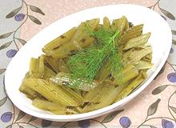

|
Marinated CeleryGreece - Selino Marinato | ||||
| Serves: Effort: Sched: DoAhead: |
6 app ** 1 day Must |
A fresh, lemony salad appetizer that can be made easily, in any quantity, and well ahead of need. For a more complex French version see Celery à la Grecque. | |||
|
2 ------ 1/2 1/3 1/2 2 2 2 1 3/4 1/2 ------ |
# --- c c c T T t t ---- |
Celery -- Marinade Olive Oil, ExtV Lemon Juice Water Fennel leaves Parsley sprig Thyme sprig Bay Leaf Salt Pepper -- Garnish Fennel fronds Lemon Slices |
Make - (1 to 2 days - 15 min work)
|